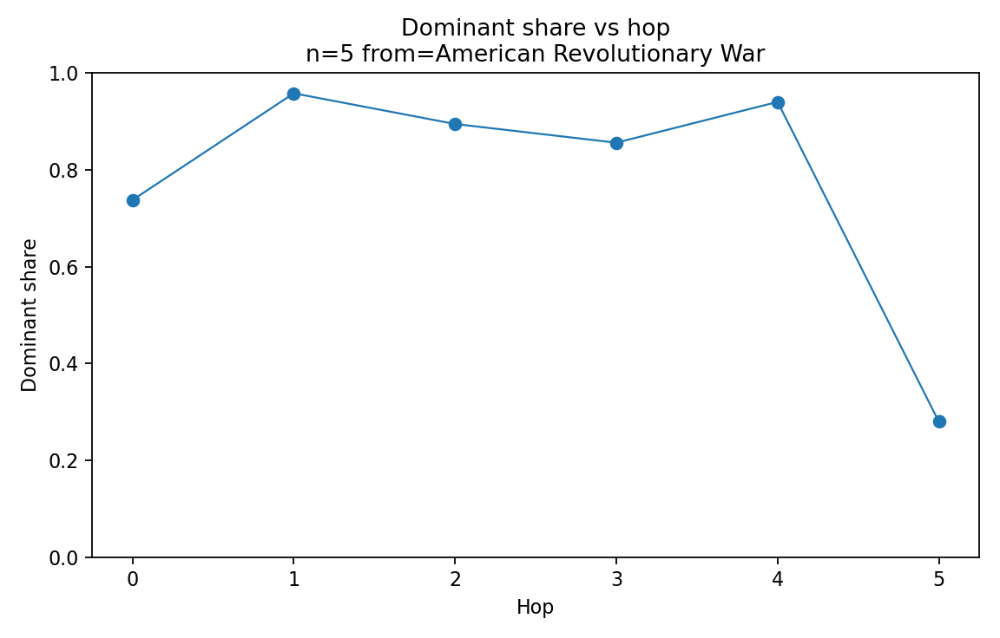
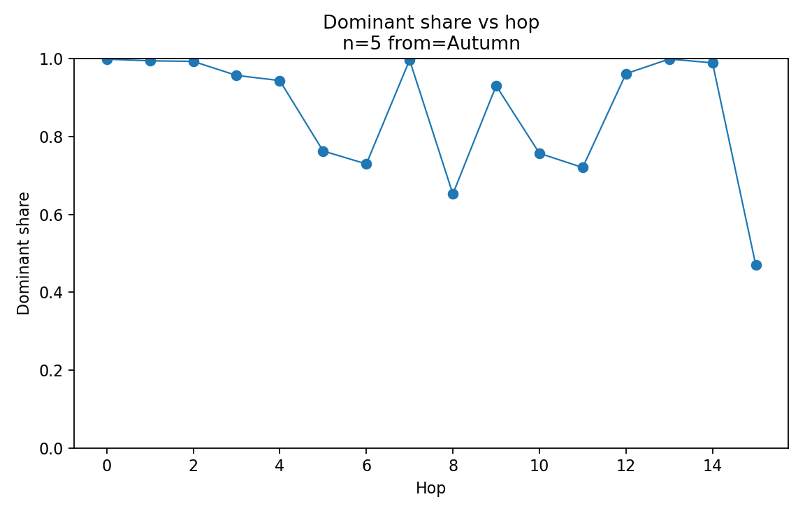
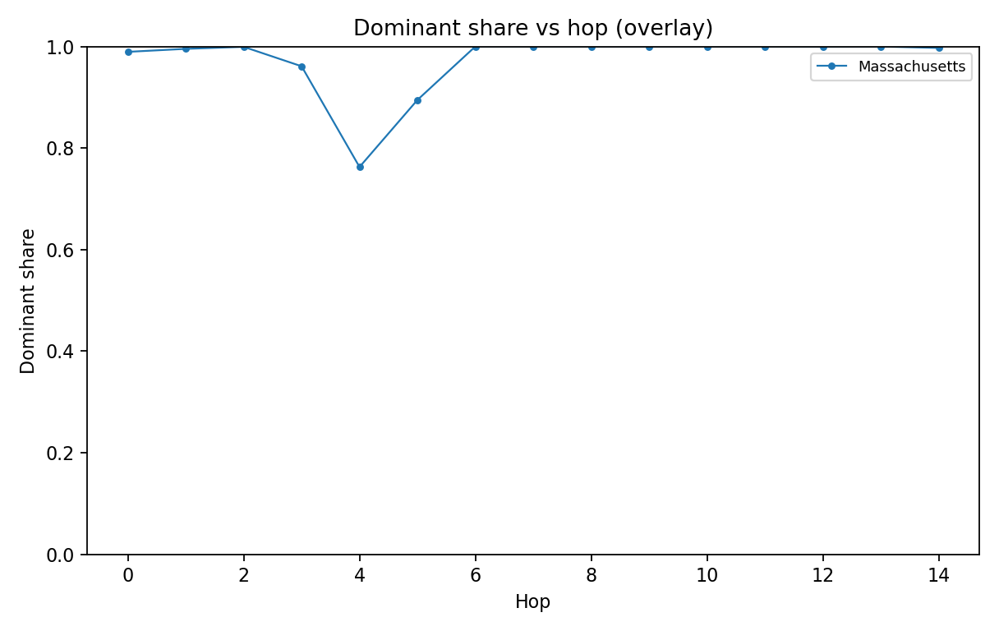

N=5 Basin Structure - Human-Facing Summary (So Far)
Date: 2025-12-30
Scope: Wikipedia fixed-$N$ rule with $N=5$ (the induced functional graph $f_5$).
Goal: Summarize what we've empirically learned about basin sizes, branch ("watershed") structure, and dominant-upstream trunks.
This report is generated from gitignored analysis artifacts under data/wikipedia/processed/analysis/.
## Key Takeaways
- Basin sizes vary substantially in a small sample; a "giant basin" candidate exists (
Massachusetts <-> Gulf_of_Maine). - Many basins are highly single-trunk at depth 1: one predecessor subtree captures most upstream mass.
- "Non-trunky" at hop 0 does not imply "non-trunky" upstream: dominant-upstream chase can quickly enter high-dominance regimes.
- Dominance can later collapse (shares plunge) as the chase enters diffuse / long-tail regions.
## Trunkiness Dashboard
Dashboard input:
data/wikipedia/processed/analysis/branch_trunkiness_dashboard_n=5_bootstrap_2025-12-30.tsv
Charts:


Preview table:
| cycle_key | total_basin_nodes | top1_share_total | effective_branches | dominant_entry_title | dominant_enters_cycle_title |
|---|---|---|---|---|---|
| Thermosetting_polymer__Curing_(chemistry)_harness_2026-01-01 | 61353 | 0.9997 | 1.001 | Concrete | Curing_(chemistry) |
| Thermosetting_polymer__Curing_(chemistry)_reproduction_2025-12-31 | 61353 | 0.9997 | 1.001 | Concrete | Curing_(chemistry) |
| Thermosetting_polymer__Curing_(chemistry)_reproduction_2026-01-01 | 61353 | 0.9997 | 1.001 | Concrete | Curing_(chemistry) |
| Autumn__Summer_harness_2026-01-01 | 162689 | 0.9948 | 1.010 | Mediterranean_basin | Summer |
| Autumn__Summer_reproduction_2025-12-31 | 162689 | 0.9948 | 1.010 | Mediterranean_basin | Summer |
| Autumn__Summer_reproduction_2026-01-01 | 162689 | 0.9948 | 1.010 | Mediterranean_basin | Summer |
| Massachusetts__Gulf_of_Maine_harness_2026-01-01 | 1009471 | 0.9894 | 1.022 | Connecticut | Massachusetts |
| Massachusetts__Gulf_of_Maine_reproduction_2025-12-31 | 1009471 | 0.9894 | 1.022 | Connecticut | Massachusetts |
| Massachusetts__Gulf_of_Maine_reproduction_2026-01-01 | 1009471 | 0.9894 | 1.022 | Connecticut | Massachusetts |
| Massachusetts__Gulf_of_Maine_single_cycle_2026-01-01 | 1009471 | 0.9894 | 1.022 | Connecticut | Massachusetts |
| Massachusetts__Gulf_of_Maine_test_n5_validated | 1009471 | 0.9894 | 1.022 | Connecticut | Massachusetts |
| Mountain__Hill_harness_2026-01-01 | 189269 | 0.9786 | 1.044 | Mountain_range | Hill |
| Mountain__Hill_reproduction_2025-12-31 | 189269 | 0.9786 | 1.044 | Mountain_range | Hill |
| Mountain__Hill_reproduction_2026-01-01 | 189269 | 0.9786 | 1.044 | Mountain_range | Hill |
| Sea_salt__Seawater_harness_2026-01-01 | 265940 | 0.9770 | 1.047 | Fast_ice | Seawater |
| Sea_salt__Seawater_reproduction_2025-12-31 | 265940 | 0.9770 | 1.047 | Fast_ice | Seawater |
| Sea_salt__Seawater_reproduction_2026-01-01 | 265940 | 0.9770 | 1.047 | Fast_ice | Seawater |
| Sea_salt__Seawater_test_n5_validated | 265940 | 0.9770 | 1.047 | Fast_ice | Seawater |
| Latvia__Lithuania_harness_2026-01-01 | 83403 | 0.9692 | 1.064 | Poland | Lithuania |
| Latvia__Lithuania_reproduction_2025-12-31 | 83403 | 0.9692 | 1.064 | Poland | Lithuania |
## Dominance Collapse (Threshold Run)
Collapse dashboard input:
data/wikipedia/processed/analysis/dominance_collapse_dashboard_n=5_test_2026-01-01.tsv
Preview (sorted by min share):
| seed_title | first_below_threshold_hop | min_share | stop_reason | stop_at_title |
|---|---|---|---|---|
| American_Revolutionary_War | 5.0 | 0.280 | share_below_0.5 | California |
| Hill | 19.0 | 0.282 | share_below_0.5 | Iran |
| Lithuania | 16.0 | 0.355 | share_below_0.5 | Construction |
| Animal | 0.0 | 0.366 | share_below_0.5 | Animal |
| Seawater | 12.0 | 0.371 | share_below_0.5 | Canada |
| Summer | 14.0 | 0.470 | share_below_0.5 | Adelaide |
| Precedent | 2.0 | 0.479 | share_below_0.5 | Executive_(government) |
| Curing_(chemistry) | 0.648 | max_hops | Son_of_God_(Christianity) | |
| Massachusetts | 0.763 | max_hops | Criminal_law_of_the_United_States |
## Example Chases (Dominant Share vs Hop)
These are pulled from any available dominant_upstream_chain_n=5_from=*.tsv artifacts.
- dominant_upstream_chain_n=5_from=American_Revolutionary_War.tsv
- dominant_upstream_chain_n=5_from=Autumn.tsv
- dominant_upstream_chain_n=5_from=Kingdom_(biology).tsv
Charts (share + basin size per chase):
- 

- 

_share.png)
Overlay comparison:
- 
## How to Regenerate
From repo root:
python n-link-analysis/scripts/render-human-report.py --tag bootstrap_2025-12-30
This rewrites:
n-link-analysis/report/overview.mdn-link-analysis/report/assets/*.png